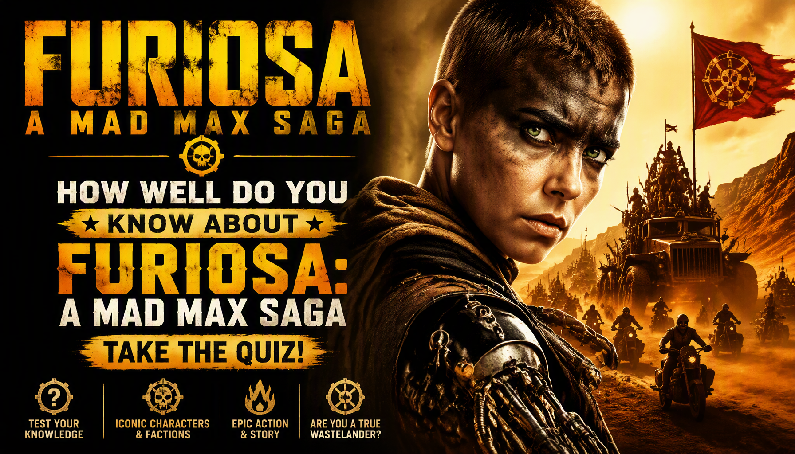

APOCALYPSE • ACTION • SCIENCE FICTION • MOVIE TRIVIA
Furiosa: A Mad Max Saga Quiz
Think you can survive the Wasteland? Test your knowledge of Furiosa, Dementus, Praetorian Jack, the Citadel, the Biker Horde, the Forty-Day Wasteland War and the events that shape Furiosa's journey.
One answer is correct for each question. Read carefully — some questions focus on details from different stages of Furiosa's journey through the Wasteland.
This quiz contains spoilers for the movie


About The Movie
Furiosa: A Mad Max Saga is a 2024 post-apocalyptic action film directed by George Miller. It serves as a prequel to Mad Max: Fury Road and follows Furiosa across several stages of her life in the Wasteland.
After being taken from the Green Place of Many Mothers as a child, Furiosa encounters Dementus and his Biker Horde. Years later, she becomes involved with the Citadel ruled by Immortan Joe and begins building the skills and reputation that eventually define her.
The movie follows Furiosa's long journey through the Wasteland, including her relationship with Praetorian Jack, the conflict between Dementus and Immortan Joe, the Forty-Day Wasteland War and the events that lead into the world of Mad Max: Fury Road.
Movie Details
- Release year: 2024
- Director: George Miller
- Genre: Post-apocalyptic action, science fiction and adventure
- Runtime: 148 minutes
- Setting: The Wasteland, the Green Place and the Citadel
- Central character: Furiosa
- Major antagonist: Dementus
- Connection: Prequel to Mad Max: Fury Road
The film stars Anya Taylor-Joy as Furiosa and Alyla Browne as young Furiosa. Chris Hemsworth plays Dementus, while Tom Burke plays Praetorian Jack. Other major characters include Immortan Joe, Mary Jabassa, the History Man, the Organic Mechanic and members of the Biker Horde and Citadel.
Important Story Elements
The Green Place
Furiosa's story begins in the Green Place of Many Mothers, a hidden homeland with water, vegetation and resources that make it very different from the surrounding Wasteland.
Mary Jabassa
Mary Jabassa is Furiosa's mother. After Furiosa is taken from the Green Place, Mary attempts to rescue her daughter and becomes involved in the conflict with Dementus and his followers.
Dementus and the Biker Horde
Dementus leads a large motorcycle-based group through the Wasteland. His ambitions and conflict with the other major powers become central to the story.
Praetorian Jack
Praetorian Jack is an experienced driver and warrior associated with Immortan Joe's forces. Furiosa works alongside him and learns from him during her years with the War Rig.
The War Rig
The War Rig is the heavily protected vehicle used to transport supplies between the Citadel and other locations. It becomes an important part of Furiosa's development and her work as a driver.
The Citadel
The Citadel is one of the major strongholds in the Wasteland. Immortan Joe controls the settlement, which is built around valuable sources of water and agricultural resources.
The Forty-Day Wasteland War
The conflict known as the Forty-Day Wasteland War becomes a major turning point in the struggle for control of resources and territory.
The History Man
The History Man travels with Dementus and records information about the world and its people. His role provides a link between the events of Furiosa's story and the history of the Wasteland.
What This Quiz Covers
This 25-question quiz focuses specifically on Furiosa: A Mad Max Saga. The questions are based on events, characters, locations, vehicles and details shown in the movie rather than general knowledge of the entire Mad Max franchise.
- Furiosa and her childhood
- The Green Place of Many Mothers
- Mary Jabassa
- Dementus and the Biker Horde
- Praetorian Jack
- The War Rig
- Immortan Joe and the Citadel
- The History Man
- The Organic Mechanic
- The Forty-Day Wasteland War
- Major events leading toward Mad Max: Fury Road
How The Quiz Works
The quiz contains 25 questions. Every question has four possible choices, with one correct answer. Questions focus on characters, events, locations, vehicles and story details from Furiosa: A Mad Max Saga.
Each correct answer earns 1 point. Incorrect answers earn 0 points. Your final score is converted into a percentage based on the number of correct answers.
The result screen shows your correct answers, incorrect answers, total questions and accuracy. You can then replay the quiz, share your result or challenge your friends.
Quiz Navigation
Starting the quiz
Select START QUIZ on the opening screen to begin. The first question will appear immediately.
Selecting an answer
Each question presents four choices. Select the answer you believe is correct before moving forward.
Next and Back
Use Next to continue through the quiz. Use Back to return to an earlier question and review or change your selection.
Finishing the quiz
Answer all 25 questions and submit the quiz. Your final score and Furiosa movie knowledge result will then be displayed.
Try Again
Select TRY AGAIN after receiving your result to start a new attempt and test your memory again.
Share and Challenge
Use SHARE MY RESULT to share your performance or CHALLENGE YOUR FRIENDS to invite other fans to take the quiz.
FAQ
How many questions are in the quiz?
There are 25 questions, and each question has four possible choices.
What is the maximum score?
The maximum score is 100%. A perfect result means all 25 questions were answered correctly.
Which movie does this quiz cover?
This quiz covers the 2024 film Furiosa: A Mad Max Saga. It does not combine questions from other Mad Max movies.
Is this quiz only about Furiosa?
Furiosa is the central character, but the quiz also covers Dementus, Praetorian Jack, Mary Jabassa, Immortan Joe, the History Man, the Citadel, the War Rig and other important movie events.
Is this a Mad Max: Fury Road quiz?
No. This quiz focuses on Furiosa: A Mad Max Saga. The film is a prequel to Mad Max: Fury Road, but the questions are specifically about events shown in Furiosa.
What does my score mean?
Your percentage represents the proportion of questions you answered correctly. The result categories are based on your performance in this quiz.
Can I take the quiz again?
Yes. Select TRY AGAIN after completing the quiz to begin another attempt and test your memory again.
Can I challenge my friends?
Yes. The CHALLENGE YOUR FRIENDS option lets you share the challenge with other fans of Furiosa: A Mad Max Saga.
Does the quiz contain spoilers?
Yes. Because the questions cover the movie's major events and ending, the quiz contains significant spoilers for Furiosa: A Mad Max Saga.
Spoiler Warning
This page contains spoilers for Furiosa: A Mad Max Saga. The information above discusses Furiosa's childhood, Mary Jabassa, Dementus, Praetorian Jack, the Citadel, the War Rig, the Forty-Day Wasteland War and other major events from the movie.
If you have not watched the film and want to experience its major events without advance information, consider watching it before reading the detailed sections or taking the quiz.